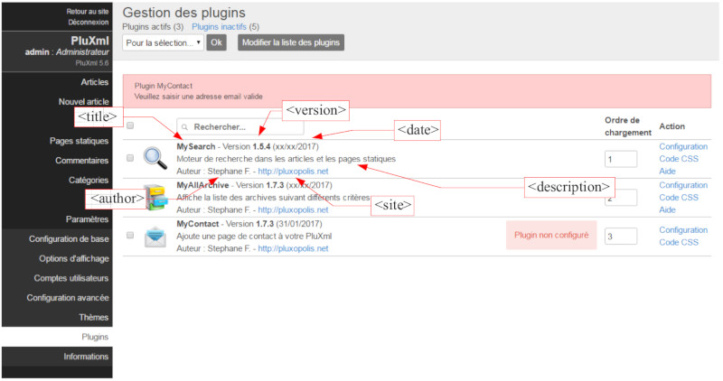
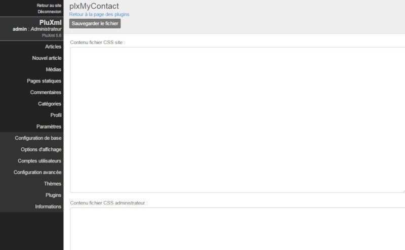

Créer un template
Pour créer un template, éditez un nouveau fichier php dans le dossier de votre thème Le nom d'un template est normalisé :
- Template pour la page d'accueil : home-xxx.php
- Template pour un article : article-xxx.php
- Template pour une categorie : categorie-xxx.php
- Template pour une page statique : static-xxx.php
Un fichier template doit toujours commencer par home-, article-, categorie- ou static- et se terminer par l'extension .php. Remplacez xxxx par le texte de votre choix pour identifier facilement vos templates.
Pour créer facilement un template vous pouvez dupliquer les fichiers correspondants home.php, article.php, categorie.php ou static.php en leur donnant un nom respectant les normes de nommage mentionnées précédemment.
fonction templateCss()
Cette fonction permet de charger automatiquement un fichier .css spécifique à votre template. Vous pouvez ainsi donner un style différent à votre thème dès que le template est appelé. Le fichier .css associé à un template doit être stocké dans le dossier thème de votre PluXml et porter le même nom que le template, mais avec l'extension .css. Ainsi si votre template s’appelle static-exemple.php votre fichier .css devra s’appeler static-exemple.css.
Assurez-vous que le code ci-dessous existe entre les balises \<head> ... \</head> de votre fichier header.php. C'est cette instruction qui permet de charger automatiquement le fichier .css associé à un template, lorsque celui-ci est utilisé.
<?php $plxShow->templaceCss(); ?>
Créer un thème
Documentation de plxShow : cliquer ici.
Description des fichiers composant un thème
Chaque thème est composé de plusieurs fichiers utiles au design et au bon fonctionnement de celui-ci. Voici la liste des fichiers présents dans un thème (pour une meilleure compréhension, nous nous baserons sur le thème par défaut de PluXml).
Liste des fichiers situés à la racine de votre thème (par ordre alphabétique) :
- archives.php : gère les pages des archives
- article.php : gère les articles avec sidebar
- article-full-width.php : template qui gère les articles en pleine page (sans sidebar)
- categorie.php : gère l’affichage des articles en fonction d’une catégorie
- categorie-full-width.php : template qui gère les articles d’une catégorie en pleine page (sans sidebar)
- commentaires.php : gère la partie commentaires des articles
- erreur.php : gère la page d’erreur
- footer.php : gère le pied de page de votre site
- header.php : gère l’entête de votre site
- home.php : gère la page d’accueil
- index.html : n’a aucune utilité pour le thème (présent par mesure de sécurité)
- infos.xml : regroupe les informations affichées sur la page Thèmes de l’administration
- preview.png : image miniature affichant l’aspect général du thème. Cette image est utilisée dans l’administration, menu Thèmes pour prévisualiser le thème
- sidebar.php : gère la barre latérale de votre site
- static.php : gère les pages statiques avec une sidebar
- static-full-width.php : template qui gère les pages statiques en pleine page (sans sidebar)
- tag.php : gère l’affichage des articles en fonction d’un tag
Votre thème contient également plusieurs dossiers importants :
- css/ : contient les feuilles de style utilisées pour l’affichage du thème
- Le thème par défaut s’appuie sur le framework css PluCSS développé par l’équipe de PluXml disponible à cette adresse : http://plucss.pluxml.org/. Il a pour objectif de faciliter et d’unifier l’utilisation du css pour homogénéiser le développement des thèmes en se basant sur une même syntaxe de référence
- Fichier plucss.css : framework css PluCSS
- Fichier theme.css : contient la personnalisation propre au thème
- img/ : contient les images utilisées dans votre thème (par exemple le favicon ou l’image présente en face des commentaires)
- lang/ : contient les fichiers prenant en charge les différentes langues gérées par le thème (français, anglais, espagnol, ...)
Les modes d’affichage
PluXml dispose de différents modes d’affichage, qui permettent d’afficher un contenu en tenant compte d’un contexte particulier. Par exemple, lorsque vous cliquez sur une catégorie dans le menu, vous entrez dans le mode d’affichage « Catégorie », qui va alors vous afficher les articles relatifs à la catégorie active.
Les différents modes d’affichage sont :
- home : gère la page d’accueil de votre site (dans votre thème : « home.php »),
- categorie : gère l’affichage des articles par catégories (dans votre thème : « categorie.php »),
- tag : gère l’affichage des articles par tags (dans votre thème : « tags.php »),
- archive : gère l’affichage des articles par archives (dans votre thème « archives.php »)
- articles : gère le contenu des articles (dans votre thème « article.php »),
- statique : gère le contenu des pages statiques (dans votre thème « static.php »),
- erreur : gère la page d’erreur de votre site (dans votre thème « erreur.php »)
Les thèmes adaptés aux mobiles
Pour faciliter le développement de thème compatibilité avec les smartphones ou tablettes, nous vous conseillons d’utiliser le framework css PluCSS.
PluCSS est un Framework CSS dédié à PluXml. Cet outil est Full CSS (sans JavaScript), pensé pour le mobile (Mobile First), et s'adapte à toutes les résolutions d'écran (Responsive Design). Il est supporté par les principaux navigateurs modernes (Chrome, Firefox, IE9+, Opera, Safari) et valide W3C.
PluCSS est disponible à cette adresse : http://plucss.pluxml.org/
Créer un plugin
Contenu du dossier d’un plugin
Les plugins de PluXml sont installés dans le dossier /plugins. Chaque dossier des plugins doit respecter un nommage simple : pas d'espace, pas de caractères spéciaux et accentués. La constante PLX_PLUGINS permet de connaître le dossier de stockage des plugins.
Un plugin est composé de plusieurs fichiers : certains sont obligatoires, d’autres optionnels.
| Nom du fichier | Description | |
|---|---|---|
| admin.php | Fichier utilisé dans l’administration de PluXml. Contient l’interface pour les utilisateurs accédant à l’administration de PluXml pour utiliser le plugin. | optionnel |
| config.php | Fichier utilisé dans l’administration de PluXml. Contient l’interface pour les administrateurs pour configurer et paramétrer le plugin. | optionnel |
| icon.png | Image identifiant le plugin et affichée sur l’écran de gestion des plugins (Menu Paramètres > Plugins). Formats autorisés : jpg, gif, png. Taille de l’image : 48 x 48 pixels | optionnel |
| infos.xml | Fichier xml contenant les informations sur le plugin : Titre, Auteur, N° de version, Date du plugin, Site de l’auteur, Description du plugin | obligatoire |
| parameters.xml | Fichier xml contenant le paramétrage servant au fonctionnement du plugin. Depuis la version 5.1.7 de PluXml, le fichier parameters.xml est stocké dans le dossier data/configuration/plugins/ | optionnel |
| plugin.php | Fichier core du plugin. Le nom du fichier doit être le même que celui du répertoire dans lequel il est stocké, écrit avec la même orthographe en respectant les majuscules et minuscules. | obligatoire |
Squelette d’un plugin
Développer un plugin nécessite de coder le fichier plugin.php en respectant un squelette et en utilisant diverses fonctions mises à disposition du développeur afin d’interagir avec PluXml et ses utilisateurs.
Prenons l’exemple d’un plugin test composé du fichier test.php
<?php
class test extends plxPlugin {
public function __construct($default_lang) {
# appel du constructeur de la classe plxPlugin (obligatoire)
parent::__construct($default_lang);
}
}
?>
Un plugin est une classe portant le même nom que le dossier dans lequel il est stocké. Cette classe est dérivée de la classe plxPlugin propre à PluXml et au fonctionnement des plugins. Le nom de la classe doit être identique au nom du dossier du plugin : même orthographe en respectant les majuscules et les minuscules.
Si le plugin est stocké dans un dossier s’appelant test, la classe du plugin devra porter également le nom test.
class test extends plxPlugin { }
Le constructeur de la classe test est obligatoire.
public function __construct($default_lang) {
# appel du constructeur de la classe plxPlugin (obligatoire)
parent::__construct($default_lang);
}
L’appel au constructeur de la classe mère de plxPlugin est obligatoire.
parent::__construct($default_lang);
Le paramètre $default_lang contient la langue par défaut utilisée par PluXml. Il servira à charger le fichier de langue du plugin s’il existe.
Code à exécuter à l’activation d’un plugin
Lors de l’activation d’un plugin il est possible d’exécuter du code spécifique. Si la méthode OnActivate existe dans la classe du plugin, elle sera appelée lors de l’activation du plugin. Cette méthode n’est pas obligatoire.
<?php
class test extends plxPlugin {
public function __construct($default_lang) {
# appel du constructeur de la classe plxPlugin (obligatoire)
parent::__construct($default_lang);
}
public function OnActivate() {
# code à exécuter à l’activation du plugin
}
}
?>
Code à exécuter à la désactivation d’un plugin
Lors de la désactivation d’un plugin il est possible d’exécuter du code spécifique. Si la méthode OnDeactivate existe dans la classe du plugin, elle sera appelée lors de la désactivation du plugin. Cette méthode n’est pas obligatoire.
<?php
class test extends plxPlugin {
public function __construct($default_lang) {
# appel du constructeur de la classe plxPlugin (obligatoire)
parent::__construct($default_lang);
}
public function OnDeactivate() {
# code à exécuter à la désactivation du plugin
}
}
?>
Code à exécuter à la mise à jour d’un plugin
Pour exécuter du code spécifique lors de l’installation d’une nouvelle version d’un plugin, placez dans le dossier du plugin un fichier texte update (exemple : /plugins/monplugin/update) contenant la ligne ci-dessous
<?php exit; ?>
Dans le fichier principal du plugin créez une méthode onUpdate. Cette méthode sera exécutée par le moteur des plugins de PluXml si la présence d’un fichier update est détectée.
Une fois la méthode onUpdate exécutée, le fichier update est supprimé (pour éviter que onUpdate soit exécutée à chaque chargement du plugin)
<?php
class test extends plxPlugin {
public function __construct($default_lang) {
# appel du constructeur de la classe plxPlugin (obligatoire)
parent::__construct($default_lang);
}
public function OnUpdate() {
# code à exécuter à la mise à jour du plugin
}
}
?>
Les hooks
Qu'est-ce qu'un hook ?
Le moteur de plugin de PluXml repose sur un système de hooks (« crochets » en français) permettant d’injecter du code php, html, javascript dans celui de PluXml.
Ces parties sont identifiables dans le code de PluXml par l'appel de la méthode callHook.
Exemple 1 : dans les fichiers core
eval($this->plxPlugins->callHook('plxMotorConstruct'));
Exemple 2 : dans les fichiers core
if(eval($this->plxMotor->plxPlugins->callHook('plxShowPagination'))) return;
Exemple 3 : dans les fichiers de l'administration
<?php eval($plxAdmin->plxPlugins->callHook('AdminTopEndHead')) ?>
Exemple 4 : dans les fichiers thèmes
<?php eval($plxShow->callHook('PluginTest'))) ?>
Appel des hooks
C’est donc la méthode callHook de la classe plxPlugins (fichier core/lib/class.plx.plugins) qui sert à définir les endroits du code de PluXml qui pourront être « hookés ».
La méthode callHook accepte 2 paramètres :
- le nom du hook appelé (obligatoire).
- un ou plusieurs paramètres passés à la fonction du hook appelé (option)
Le nom des hooks est normalisé de la façon suivante :
<nom du fichier/classe><nom de la méthode><nom de l’emplacement>
Exemples :
plxShowPagination
Fichier : core/lib/class.plx.show.php
Class : plxShow
Méthode : pagination()
plxMotorConstruct
Fichier : core/lib/class.plx.motor.php
Class : plxMotor
Méthode : __construct()
plxAdminEditUsersUpdate
Fichier : core/lib/class.plx.admin.php
Class : plxAdmin
Méthode : editUsers()
Emplacement : Update, partie de mise à jour des utilisateurs
AdminTopEndHead
Fichier : core/admin/top.php
Méthode : Header du fichier (balises </head>)
Liste des hooks
Cette liste peut être modifiée et complétée en fonction des évolutions de PluXml.
/core/admin/article.php
AdminArticleContent
AdminArticleFoot
AdminArticleInitData
AdminArticleParseData
AdminArticlePostData
AdminArticlePrepend
AdminArticlePreview
AdminArticleSidebar
AdminArticleTop
/core/admin/auth.php
AdminAuthPrepend
AdminAuthEndHead
AdminAuthTop
AdminAuth
AdminAuthEndBody
/core/admin/categorie.php
AdminCategoryPrepend
AdminCategoryTop>
AdminCategory
AdminCategoryFoot
/core/admin/categories.php
AdminCategoriesPrepend
AdminCategoriesTop
AdminCategoriesFoot
/core/admin/comment.php
AdminCommentPrepend
AdminCommentTop
AdminComment
AdminCommentFoot
/core/admin/comments.php
AdminCommentsPrepend
AdminCommentsTop
AdminCommentsPagination
AdminCommentsFoot/core/admin/comment_new.php
AdminCommentNewPrepend
AdminCommentNewTop
AdminCommentNew
AdminCommentNewList
AdminCommentNewFoot
/core/admin/foot.php
AdminFootEndBody
/core/admin/index.php
AdminIndexPrepend
AdminIndexTop
AdminIndexPagination
AdminIndexFoot
/core/admin/medias.php
AdminMediasPrepend
AdminMediasTop
AdminMediasFoot
AdminMediasUpload
/core/admin/parametres_affichage.php
AdminSettingsDisplayTop
AdminSettingsDisplay
AdminSettingsDisplayFoot
/core/admin/parametres_avances.php
AdminSettingsAdvancedTop
AdminSettingsAdvanced
AdminSettingsAdvancedFoot
/core/admin/parametres_base.php
AdminSettingsBaseTop
AdminSettingsBase
AdminSettingsBaseFoot
/core/admin/parametres_edittpl.php
AdminSettingsEdittplTop
AdminSettingsEdittpl
AdminSettingsEdittplFoot
/core/admin/parametres_infos.php
AdminSettingsInfos
/core/admin/parametres_plugins.php
AdminSettingsPluginsTop
AdminSettingsPluginsFoot
/core/admin/parametres_themes.php
AdminThemesDisplay
AdminThemesDisplayFoot
AdminThemesDisplayTop
/core/admin/parametres_users.php
AdminSettingsUsersTop
AdminSettingsUsersFoot
/core/admin/prepend.php
AdminPrepend
/core/admin/profil.php
AdminProfilPrepend
AdminProfilTop
AdminProfil
AdminProfilFoot
/core/admin/statique.php
AdminStaticPrepend
AdminStaticTop
AdminStatic
AdminStaticFoot
/core/admin/statiques.php
AdminStaticsPrepend
AdminStaticsTop
AdminStaticsFoot
/core/admin/top.php
AdminTopEndHead
AdminTopMenus
AdminTopBottom
/core/admin/user.php
AdminUserPrepend
AdminUserTop
AdminUser
AdminUserFoot
/core/lib/class.plx.admin.php
plxAdminConstruct
plxAdminEditConfiguration
plxAdminHtaccess
plxAdminEditProfil *
plxAdminEditProfilXml
plxAdminEditUsersUpdate
plxAdminEditUsersXml
plxAdminEditUser
plxAdminEditCategoriesNew
plxAdminEditCategoriesUpdate
plxAdminEditCategoriesXml
plxAdminEditCategorie
plxAdminEditStatiquesUpdate
plxAdminEditStatiquesXml
plxAdminEditStatique
plxAdminEditArticle *
plxAdminEditArticleXml
plxAdminDelArticle */core/lib/class.plxfeed.php
plxFeedConstruct
plxFeedPreChauffageBegin *
plxFeedPreChauffageEnd
plxFeedDemarrageBegin *
plxFeedDemarrageEnd
plxFeedRssArticlesXml
plxFeedRssCommentsXml
plxFeedAdminCommentsXml
/core/lib/class.plx.motor.php
plxMotorConstruct
plxMotorPreChauffageBegin *
plxMotorPreChauffageEnd
plxMotorDemarrageBegin *
plxMotorDemarrageEnd
plxMotorDemarrageNewCommentaire
plxMotorDemarrageCommentSessionMessage
plxMotorGetCategories
plxMotorGetStatiques
plxMotorGetUsers
plxMotorParseArticle
plxMotorParseCommentaire
plxMotorRedir301
plxMotorNewCommentaire *
plxMotorAddCommentaire *
plxMotorAddCommentaireXml
plxMotorSendDownload *
/core/lib/class.plx.show.php
plxShowConstruct
plxShowPageTitle *
plxShowMeta *
plxShowLastCatList *
plxShowArtTags *
plxShowArtFeed *
plxShowLastArtList *
plxShowComFeed *
plxShowLastComList *
plxShowStaticListBegin *
plxShowStaticListEnd *
plxShowStaticContentBegin*
plxShowStaticContent
plxShowStaticInclude *
plxShowPagination *
plxShowTagList *
plxShowArchList *plxShowPageBlog *
plxShowTagFeed *
plxShowTemplateCss *
plxShowCapchaQ *
plxShowCapchaR *
/index.php
Index
IndexBegin
IndexEnd
/sitemap.php
SitemapStatics
SitemapCategories
SitemapArticles
SitemapBegin
SitemapEnd
/feed.php
FeedBegin
FeedEnd
Hooks des thèmes
ThemeEndHead
ThemeEndBody
* Hooks acceptant une valeur de retour permettant d’interrompre l’exécution du code suivant l’appel du hook. Voir chapitre « Interrompre une fonction de PluXml ».
Création d’un hook
Ajouter un hook
L’ajout d’un hook se fait par l’instruction
$this->addHook
Exemple :
$this->addHook('AdminTopEndHead', 'AdminTopEndHead');
- 1er paramètre : nom du hook tel qu’il est défini dans la liste des hooks disponibles.
- 2ième paramètre : nom de la méthode à exécuter lorsque le hook est appelé. Cette méthode fait partie de la classe du plugin.
Exemple :
<?php
class test extends plxPlugin {
public function __construct($default_lang) {
# Appel du constructeur de la classe plxPlugin (obligatoire)
parent::__construct($default_lang);
# Déclaration des hooks
$this->addHook('AdminTopEndHead', 'AdminTopEndHead');
}
public function AdminTopHead() {
echo '<script src="'.PLX_PLUGINS.'test/test.js"></script>';
}
}
?>
Dans cet exemple, le hook va ajouter dans le fichier core/admin/top.php le code suivant avant la balise \</head>
<script src="../../plugins/test/test.js"></script>
Note
Il est conseillé de nommer la méthode avec même nom que le hook.
Fichier infos.xml
Le fichier infos.xml contient les données utilisées pour identifier le plugin sur la page de gestion des Plugins.
Structure XML du fichier
Exemple :
<?xml version="1.0" encoding="UTF-8"?>
<document>
<title><![CDATA[Plugin de test]]></title>
<author><![CDATA[Stéphane F.]]></author>
<version>1.0</version>
<date>01/12/2010</date>
<site>http://pluxml.org</site>
<description><![CDATA[Plugin de test pour PluXml]]></description>
</document>
Description des balises
| Balises | Description | Format |
|---|---|---|
| title | Titre du plugin | cdata |
| author | Nom de l’auteur du plugin | cdata |
| version | Numéro de version du plugin | strong |
| date | Date de création ou de mise à jour du plugin | strong |
| site | Site de l’auteur du plugin | strong |
| description | Description du plugin | cdata |
Utilisation des données du fichier infos.xml
Les données du fichier infos.xml sont utilisées essentiellement sur l’écran de Gestion des plugins. Chaque donnée des balises XML sont utilisées de la manière suivantes :

Aide et configuration d'un plugin
Suivant les plugins, les liens Aide et Configuration peuvent exister dans l'écran Gestion des plugins de l'administration.
Si un fichier config.php existe dans le dossier du plugin, le lien Configuration est visible et permet d’accéder à l’écran de configuration du plugin.
Si un fichier d’aide existe dans le dossier lang du plugin, le lien Aide est visible et permet d’accéder à l’écran d’affichage de l’aide du plugin.
Le nom du fichier d’aide utilisé dépend de la langue utilisé par PluXml. Si PluXml est configuré pour utiliser la langue anglaise (en), le fichier lang/en-help.php dans le dossier du plugin sera utilisé et affiché (si le fichier existe). Pour une aide en français le fichier fr-help.php doit exister.
Le menu Code css permet de définir du code css qui sera utilisé par le plugin coté utilisateur et/ou coté administration.
Le code css est mis en cache dans les fichiers :
- /data/site.css pour la partie visiteur
- /data/admin.css pour la partie administration
Note
Si aucun code n’est présent pour au moins un plugin, les fichiers css de cache n’existe pas.
L’utilisation de ce paramétrage permet à l’administrateur du site de définir le code css nécessaire au fonctionnement des plugins, indépendamment de celui définit et codé en dur par le développeur dans le core plugin.
Pour initialiser le contenu des zones de saisie Contenu fichier css site et Contenu fichier css administrateur, créer les fichiers css suivants dans le dossier de votre plugin :
/plugins/monplugin/css/site.css
/plugins/monplugin/css/admin.css
Si l’un de ces fichiers existe et contient du code css, il sera affiché dans les zones textes de saisies correspondantes. Le contenu des zones pourra être modifié par l’utilisateur. Les modifications seront mises dans les fichiers css en cache, sans altérer les fichiers css d’origine stockés dans /plugins/monplugin/css/

Fichier parameters.xml
Le fichier parameters.xml contient les données utilisées comme paramètres pour le fonctionnement du plugin. Les fichiers parameters.xml des plugins sont stockés dans le dossier
data/configuration/plugins/
Structure du fichier
Exemple :
<?xml version='1.0' encoding='UTF-8'?>
<document>
<parameter name="param1" type="numeric">999</parameter>
<parameter name="param2" type="string">parametre</parameter>
<parameter name="param3" type="cdata"><![CDATA[parametre 2]]></parameter>
</document>
Chaque paramètre est à mettre dans une balise parameter. Les attributs name et type sont obligatoires. Un type peut être numeric, string ou cdata. Il conditionne la façon de stocker le contenu de la balise parameter. Le nom des paramètres est libre.
<parameter name="param1" type="numeric">999</parameter>
<parameter name="titre" type="string">titre</parameter>
Le fichier parameters.xml peut être utilisé et renseigné de plusieurs façons :
- renseigné et utilisé à partir du code du plugin,
- renseigné de manière interactive à partir de l’écran de configuration du plugin.Lecture des données du fichier parameters.xml
La méthode getParam de l’object $plxPlugin permet de récupérer la valeur d’un paramètre stocké dans le fichier parameters.xml.
$plxPlugin->getParam('<nom du parametre>’)
Exemple :
$plxPlugin->getParam('param1')
Écriture des données dans le fichier parameters.xml
L’écriture se fait en 2 temps :
- renseigner la valeur du paramètre en appelant la méthode setParam de l’object $plxPlugin
- sauvegarder les données dans le fichier en appelant la méthode saveParams de l’object $plxPlugin
Définir un paramètre
$plxPlugin->setParam('<nom du parametre>’, ‘<valeur du parameter>’, ‘<type du parametre>’)
setParam permet de définir la valeur d’un paramètre.
Le type de paramètre doit être une valeur parmi numeric, string, cdata
Exemple :
$plxPlugin-> setParam ('param1', 12345, 'numeric')
Sauvegarder les paramètres
saveParams permet de sauvegarder tous les paramètres dans le fichier parametres.xml du plugin.
Exemple :
$plxPlugin->saveParams()
Voici un exemple de code qui affiche un formulaire en pré-renseignant les zones de saisies à partir des données stockées dans le fichier parameters.xml, puis qui sauvegarde les nouvelles valeurs saisies une fois le formulaire soumis.
Exemple :
<?php
if(!empty($_POST)) {
$plxPlugin->setParam('param1', $_POST['param1'], 'numeric');
$plxPlugin->setParam('param2', $_POST['param2'], 'string');
$plxPlugin->setParam('param3', $_POST['param3'], 'cdata');
$plxPlugin->saveParams();
}
?>
<form action="parametres_plugin.php?p=test" method="post">
Parametre 1 : <input type="text" name="param1" value="<?php echo plxUtils::strCheck($plxPlugin->getParam('param1')) ?>" /><br />
Parametre 2 : <input type="text" name="param2" value="<?php echo plxUtils::strCheck($plxPlugin->getParam('param2')) ?>" /><br />
Parametre 3 : <input type="text" name="param3" value="<?php echo plxUtils::strCheck($plxPlugin->getParam('param3')) ?>" /><br />
<br />
<input type="submit" name="submit" value="Enregistrer" />
</form>
Il est indispensable d’utiliser la fonction plxUtils::strCheck afin de protéger l’affichage des caractères spéciaux mais aussi pour éviter, par exemple, d’injecter du code javascript (failles XSS).
Fichiers de langue
Le paramètre d’entrée $default_lang du constructeur __construct() de la classe du plugin contient la langue par défaut utilisée par PluXml. Il permet de charger le fichier de langue du plugin contenu dans le dossier lang.
Exemple :
<?php
class test extends plxPlugin {
public function __construct($default_lang) {
# appel du constructeur de la classe plxPlugin (obligatoire)
parent::__construct($default_lang);
}
}
?>
Emplacement des fichiers de langue
Les fichiers de langue sont stockés dans le dossier lang du plugin. Les fichiers de langue sont nommés de la façon suivante :
- fr.php
- en.php
Si PluXml est configuré en anglais, le paramètre $default_lang contient la valeur en. Le fichier en.php dans le répertoire /plugins/test/lang/ est utilisé. De cette façon, les plugins peuvent être multi-langues.
Structure d’un fichier de langue
Un fichier de langue est un fichier php qui contient un tableau $LANG avec des mots clés et les traductions dans la langue désirée.
Exemple :
<?php
$LANG = array(
'L_TITLE' => 'Plugin de test',
'L_DESCRIPTION' => 'Description du plugin de test'
);
?>
Utilisation d’un fichier de langue
Le fichier de langue correspondant à langue par défaut de PluXml est, s’il existe, chargé automatiquement par le moteur de plugin. Pour récupérer et utiliser une traduction à partir d’un plugin, il faut utiliser l’une des deux instructions suivantes :
Renvoie la traduction de la clé passée en paramètre :
$this->getLang(‘<clé de traduction>’);
Affiche la traduction de la clé passée en paramètre :
$this->lang(‘<clé de traduction>’);
Exemple :
<?php
class test extends plxPlugin {
public function __construct($default_lang) {
# appel du constructeur de la classe plxPlugin (obligatoire)
parent::__construct($default_lang);
# Ajoute le hook
$this->addHook('ThemeEndHead', 'ThemeEndHead');
}
public function ThemeEndHead() {
echo $this->getLang("L_TITLE");
$this->getLang("L_DESCRIPTION");
}
}
?>
Fichier d’aide
Dans le dossier lang peut également être présent le fichier d’aide du plugin à afficher en fonction de la langue utilisée dan PluXml. Les fichiers d’aide sont nommés de la façon suivante :
<lang>-help.php
Exemple : fr-help.php, en-help.php
Ces fichiers ne sont pas obligatoires. Si un fichier correspondant à la langue de PluXml existe, il sera affiché lors du clic sur le lien Aide du plugin. Si aucun fichier d’aide n’est présent, le lien Aide n’est pas visible.
Exemple du contenu d'un fichier aide
<?php if(!defined('PLX_ROOT')) exit; ?>
<h2>Aide</h2>
<p>Fichier d'aide du plugin test</p>
Un fichier d’aide est un simple fichier avec du contenu au format html.
Lien du menu aide Pour des raisons de sécurité il est recommandé d'ajouter la ligne suivante au début du fichier d'aide.
<?php if(!defined('PLX_ROOT')) exit; ?>
Créer un écran de configuration
Il est possible d’avoir un écran de configuration réservé à un ou plusieurs profils d'utilisateur définis par le programmeur, afin de renseigner des paramètres nécessaires au fonctionnement du plugin. Cet écran est conçu par le développeur du plugin en fonction de ses besoins et de celui du plugin.
Création de l'écran de configuration
Le fichier correspondant à l’écran de configuration s’appelle config.php. Il est stocké dans le dossier du plugin. Il n’est pas obligatoire. Si ce fichier est présent, il sera accessible en cliquant sur le lien Configuration du plugin dans l’écran de Gestion des plugins (Menu Paramètres > Sous-menu Plugins).

On accède alors au fichier parametres_plugin.php grâce l’url parametres_plugin.php?p=test (où la valeur du paramètre p est le nom du plugin).
Lors du chargement du fichier parametres_plugin.php le fichier config.php du plugin demandé est chargé et affiché à l’écran.
Exemple de contenu du fichier config.php :
<?php if(!defined('PLX_ROOT')) exit; ?>
<?php
# Control du token du formulaire
plxToken::validateFormToken($_POST);
if(!empty($_POST)) {
$plxPlugin->setParam('param1', $_POST['param1'], 'numeric');
$plxPlugin->setParam('param2', $_POST['param2'], 'string');
$plxPlugin->setParam('param3', $_POST['param3'], 'cdata');
$plxPlugin->saveParams();
header('Location: parametres_plugin.php?p=test');
exit;
}
?>
<form class="inline-form" action="parametres_plugin.php?p=test" method="post" id="form_test">
<fieldset>
<p>
<label for="id_param1">Paramètre 1 :</label>
<?php plxUtils::printInput('param1',$plxPlugin->getParam('param1'),'text','4-4') ?>
</p>
<p>
<label for="id_param2">Paramètre 2 :</label>
<?php plxUtils::printInput('param2',$plxPlugin->getParam('param2'),'text','20-20') ?>
</p>
<p>
<label for="id_param3">Paramètre 3 :</label>
<?php plxUtils::printInput('param3',$plxPlugin->getParam('param3'),'text','20-20') ?>
</p>
<p class="in-action-bar">
<?php echo plxToken::getTokenPostMethod() ?>
<input type="submit" name="submit" value="Enregistrer" />
</p>
</fieldset>
</form>
La première ligne du fichier est indispensable car elle apporte une sécurité au plugin mais aussi à tout PluXml en interdisant d’appeler et d’exécuter directement le fichier config.php sans passer par PluXml.
<?php if(!defined('PLX_ROOT')) exit; ?>
Formulaire de saisie
Le formulaire de saisie servant à renseigner les différents paramètres qui seront sauvegardés dans le fichier parametres.xml doit être déclaré de la façon suivante :
<form action="parametres_plugin.php?p=test" method="post">
...
</form>
L’argument action de la balise doit pointer vers l’url parametres_plugin.php?p=test où la valeur du paramètre p est le nom du plugin (équivalent au nom du dossier du plugin).
Ajouter un bouton dans la barre d’action
Pour ajouter un bouton d’action dans la barre d’action, déclarer le dans une balise \<p> ayant la classe css : in-action-bar. De cette façon le bouton sera automatiquement positionné dans la barre d’action.
<p class="in-action-bar">
<?php echo plxToken::getTokenPostMethod() ?>
<input type="submit" name="submit" value="Enregistrer" />
</p>
Sécurité
La ligne suivante est obligatoire. Elle créer un champ caché contenant un code de sécurité qui sera vérifié lors du traitement des données du formulaire.
<?php echo plxToken::getTokenPostMethod() ?>
Les lignes suivantes sont obligatoires. Elles permettent de vérifier le code de sécurité contenu dans le champs caché et créé par plxToken::getTokenPostMethod()
# Control du token du formulaire
plxToken::validateFormToken($_POST);Définir les droits d’accès
Les droits d’accès à l’écran de configuration se définissent dans le code du plugin, grâce à l’instruction :
$this->setConfigProfil(<profil>);
Les profils disponibles sont définis par les constantes :
- PROFIL_ADMIN : administrateur
- PROFIL_MANAGER : gestionnaire
- PROFIL_MODERATOR : modérateur
- PROFIL_EDITOR : éditeur
- PROFIL_WRITER : rédacteur
Plusieurs profils peuvent être spécifiés en les séparant par des virgules :
$this-> setConfigProfil(PROFIL_ADMIN, PROFIL_WRITER);
Exemple :
<?php
class test extends plxPlugin {
public function __construct($default_lang) {
# appel du constructeur de la classe plxPlugin (obligatoire)
parent::__construct($default_lang);
# limite l'accès à l'écran d'administration du plugin
$this->setConfigProfil(PROFIL_ADMIN);
}
}
?>
Si les droits autorisant l’accès à l’écran config.php ne sont pas précisés ou non valides, l’utilisateur sera redirigé vers la page index.php de l’administration avec un message d’erreur « Accès interdit ».
Créer un écran d’administration
Il est possible d’avoir un écran d’administration réservé à un ou plusieurs profils utilisateur accédant à l’administration de PluXml. Les droits d’accès sont définis par le développeur du plugin en fonction de ses choix et ceux du plugin.

Création de l'écran d'administration
Le fichier correspondant à l’écran de configuration s’appelle admin.php. Il est stocké dans le dossier du plugin. Il n’est pas obligatoire. Si ce fichier est présent, il sera accessible à partir de la barre des menus de gauche (sidebar). L’affichage du menu tient compte des droits accordés pour accéder à l’écran.
Exemple de menu d’administration : contenu du fichier admin.php
<?php if(!defined('PLX_ROOT')) exit; ?>
<form class="inline-form" action="plugin.php?p=test" method="post" id="form_test">
<div class="action-bar">
<h2>Plugin de Test</h2>
<p>Ceci est un plugin de test</p>
<input type="submit" value="Bouton qui sert à rien" />
</div>
<p>
Et quia Montius inter dilancinantium manus spiritum efflaturus Epigonum et Eusebium nec professionem nec dignitatem ostendens aliquotiens increpabat, qui sint hi magna quaerebatur industria, et nequid intepesceret, Epigonus e Lycia philosophus ducitur et Eusebius ab Emissa Pittacas cognomento, concitatus orator, cum quaestor non hos sed tribunos fabricarum insimulasset promittentes armorum si novas res agitari conperissent.
</p>
<fieldset>
<p>
<label for="id_field1">Champ de saisie 1 :</label>
<?php plxUtils::printInput('field1','','text','4-4') ?>
</p>
<p>
<label for="id_field2">Champ de saisie 2 :</label>
<?php plxUtils::printInput('field2','','text','4-4') ?>
</p>
</fieldset>
</form>
La première ligne du fichier est indispensable car elle apporte une sécurité au plugin mais aussi à tout PluXml en interdisant d’appeler et d’exécuter directement le fichier admin.php sans passer par PluXml.
<?php if(!defined('PLX_ROOT')) exit; ?>
- class="inline-form" : permet d’avoir les champs de formulaire sur une seule ligne (voir documentation de PluCSS, paragraphe “Formulaire”)
- class="action-bar" : permet d’afficher le contenu de la balise div dans la barre d’action en haut de page
Définir les droits d’accès
Les droits d’accès à l’écran d’administration se définissent dans le code du plugin, grâce à l’instruction :
$this->setAdminProfil(<profil>);
Les profils disponibles sont définis par les constantes
- PROFIL_ADMIN : administrateur
- PROFIL_MANAGER : gestionnaire
- PROFIL_MODERATOR : modérateur
- PROFIL_EDITOR : éditeur
- PROFIL_WRITER : rédacteur
Plusieurs profils peuvent être spécifiés en les séparant par des virgules :
$this->setAdminProfil(PROFIL_ADMIN, PROFIL_WRITER);
Exemple :
<?php
class test extends plxPlugin {
public function __construct($default_lang) {
# appel du constructeur de la classe plxPlugin (obligatoire)
parent::__construct($default_lang);
# limite l'accès à l'écran d'administration du plugin
$this->setAdminProfil(PROFIL_MODERATOR);
}
}
?>
Si les droits autorisant l’accès à l’écran admin.php ne sont pas précisés ou non valides, l’utilisateur sera redirigé vers la page index.php de l’administration avec un message d’erreur « Accès interdit ».
Personnaliser le menu d'administration
L'affichage du menu pour accéder à l'écran d'administration peut être personnaliser grâce à la méthode setAdminMenu.
Exemple :
<?php
class test extends plxPlugin {
public function __construct($default_lang) {
# appel du constructeur de la classe plxPlugin (obligatoire)
parent::__construct($default_lang);
# Accès au menu admin réservé au profil administrateur
$this->setAdminProfil(PROFIL_ADMIN);
# Personnalisation du menu admin
$this->setAdminMenu('Titre du menu', 3, 'Légende du lien');
}
}
?>
La méthode setAdminMenu accepte 3 paramètres :
| paramètres | nom | description |
|---|---|---|
| 1er paramètre | title | titre du menu |
| 2ième paramètre | position | position du menu dans la sidebar |
| 3ième paramètre | caption | légende du menu (balise title du lien) |
Il peut être intéressant d'offrir à l'utilisateur la possibilité de paramétrer le comportement du menu à partir de l'écran de configuration du plugin, en sauvegardant et en utilisant ses préférences dans le fichier des paramètres du plugin parameters.xml.
Exemple :
<?php
class test extends plxPlugin {
public function __construct($default_lang) {
# appel du constructeur de la classe plxPlugin (obligatoire)
parent::__construct($default_lang);
# Accès au menu admin réservé au profil administrateur
$this->setAdminProfil(PROFIL_ADMIN);
# Personnalisation du menu admin
$this->setAdminMenu($this->getParam('menuName'), $this->getParam('menuPos'), $this->getParam('mnuCaption'));
}
}
?>
Modifier le comportement de PluXml
Injecter du code
Voyons maintenant comment modifier le comportement d'une fonction de PluXml. Nous allons prendre comme exemple, l'ajout d'un champ de saisie sur l'écran de gestion des options des catégories. Pour cela il nous faut :
- rajouter un champ de saisie sur l'écran des options des catégories (Menu Catégories > Liens Options)
- enregistrer la valeur saisie lors du clic sur le bouton dans le fichier data/configuration/categories.xml
- lire la nouvelle donnée lorsque le fichier data/configuration/categories.xml est chargé

Liste des hooks utilisés :
| Hook | Fichier | Méthode | Emplacement |
|---|---|---|---|
| plxAdminEditCategoriesNew | class.plx.admin.php | editCategories() | New : création |
| plxAdminEditCategoriesUpdate | class.plx.admin.php | editCategories() | Update : mise à jour |
| plxAdminEditCategoriesXml | class.plx.admin.php | editCategories() | Xml : mise en forme xml |
| plxAdminEditCategory | class.plx.admin.php | editCategorie() | Lecture des données xml dans le fichier categories.xml |
| AdminCategory | categorie.php | Ecran gérant les options d'une catégorie | |
| plxMotorGetCategories | class.plx.motor.php | getCategories() | Lecture des données xml dans le fichier categories.xml |
Code du plugin
<?php
class categories extends plxPlugin {
public function __construct($default_lang) {
# appel du constructeur de la classe plxPlugin (obligatoire)
parent::__construct($default_lang);
# Ajoute des hooks
$this->addHook('plxAdminEditCategoriesNew', 'plxAdminEditCategoriesNew');
$this->addHook('plxAdminEditCategoriesUpdate', 'plxAdminEditCategoriesUpdate');
$this->addHook('plxAdminEditCategoriesXml', 'plxAdminEditCategoriesXml');
$this->addHook('plxMotorGetCategories', 'plxMotorGetCategories');
$this->addHook('plxAdminEditCategory', 'plxAdminEditCategory');
$this->addHook('AdminCategory', 'AdminCategory');
}
public function plxAdminEditCategoriesNew() {
echo "<?php \$this->aCats[\$content['new_catid']]['test']=''; ?>";
}
public function plxAdminEditCategoriesUpdate() {
echo "<?php \$this->aCats[\$cat_id]['test']=(isset(\$this->aCats[\$cat_id]['test'])?\$this->aCats[\$cat_id]['test']:'')?>";
}
public function plxAdminEditCategoriesXml() {
echo "<?php \$xml .= '<test><![CDATA['.plxUtils::cdataCheck(\$cat['test']).']]></test>'; ?>";
}
public function plxMotorGetCategories() {
echo "<?php \$this->aCats[\$number]['test'] = isset(\$iTags['test'][\$i])?\$values[\$iTags['test'][\$i]]['value']:'';?>";
}
public function plxAdminEditCategory() {
echo "<?php \$this->aCats[\$content['id']]['test'] = trim(\$content['test']); ?>";
}
public function AdminCategory() {
$string = <<<END
<?php
echo '<p class="field"><label for="id_test">Test :</label></p>';
plxUtils::printInput('test', plxUtils::strCheck(\$plxAdmin->aCats[\$id]['test']),'text', '10-255');
?>
END;
echo $string;
}
}
?>
Détail du code
public function AdminCategory () {
$string = <<<END
<?php
echo '<p class="field"><label for="id_test">Test :</label></p>';
plxUtils::printInput('test', plxUtils::strCheck(\$plxAdmin->aCats[\$id]['test']), 'text', '10-255');
?>
END;
echo $string;
}
La méthode AdminCategory() permet d'afficher le nouveau champ sur l'écran des options de la catégorie “Rubrique 1”.
La chaîne de caractère $string contient le code qui va être interprété lorsque la page options sera chargée. C'est pour cette raison qu'il est nécessaire de préciser les balises php au début et à la fin de $string.
Notez l'alternative pour renseigner $string grâce à END ... END;. Notez également l'utilisation du caractère \ devant chaque variable comme par exemple devant $plxAdmin->aCats car ici il ne s'agit non pas d'une variable locale à la méthode AdminCategory(), mais d'une variable utilisée dans le fichier categorie.php.
public function plxAdminEditCategoriesNew () {
echo "<?php \$this->aCats[\$content['new_catid']]['test']=''; ?>";
}
La méthode plxAdminEditCategoriesNew() injecte le code php devant être utilisé dans la fonction servant à renseigner le tableau $this->aCats. Encore une fois, nous utilisons les balises php car le code ne doit pas simplement être affiché, mais interprété par la fonction qui utilise le hook plxAdminEditCategoriesNew.
De façon plus générale, nous déclarons le code tel qu’il serait écrit si nous modifions directement le code de la fonction editCategories du fichier class.plx.admin.php.
Il ne reste plus qu'à écrire tout le code nécessaire pour gérer le nouveau champ test comme par exemple la méthode plxAdminEditCategoriesXml() qui formate la chaîne xml sauvegardée dans le fichier categories.xml dans le fichier class.plx.admin.php méthode editCategories().
Interrompre une fonction de PluXml
Certains hooks acceptent de recevoir en retour de traitement une valeur afin d’interrompre l’exécution de la fonction appelante. Dans le code d'un plugin, pour arrêter l’exécution de la fonction de PluXml "hookée", il faut utiliser la syntaxe :
return true;
Un simple return; ne fonctionne pas, ceci est du à l'utilisation de la fonction eval servant à évaluer le code du plugin. Pour éviter que le code suivant l’instruction eval ne soit exécuté, il faut donc faire apparaître dans le plugin :
return true;
Exemple ::
public function plxMotorDemarrageBegin(){
$string = <<<END
<?php
if(\$this->mode=="galerie"){
\$this->template = 'galerie.php';
return true;
}
?>
END;
echo $string;
}
Ici on injecte du code comme si on l'avait saisi au début de la méthode Demarrage() de la classe plxMotor. Si la condition du if est valide, on fait un return true; pour arrêter la suite du code de la méthode Demarrage(). Au niveau de la syntaxe, si un simple return; était utilisé, la suite du code serait quand même exécutée. Il faut donc bien mettre return true;
Tous les hooks n’acceptent pas de valeur de retour (voir tableau des hooks). En effet un hook qui est en fin d'une fonction de PluXml, n'a aucun intérêt à gérer une valeur de retour sur un return. Par exemple dans le fichier class.plx.show.php :
public function pageTitle() {
# Hook Plugins
if(eval($this->plxMotor->plxPlugins->callHook('plxShowPageTitle'))) return;
...
}
Ici le hook est au début de la méthode pageTitle(). Il peut donc être utile de ne pas exécuter la suite du code. On a donc une syntaxe avec un if qui va tester la valeur de retour envoyée par le plugin grâce à la ligne : return true;. Autre exemple dans class.plx.admin.php :
public function __construct($filename) {
parent::__construct($filename);
# Hook plugins
eval($this->plxPlugins->callHook('plxAdminConstruct'));
}
Ici le hook est à la fin du constructeur de la class plxAdmin. Il n’y a plus de code après. Il est donc inutile de gérer une valeur de retour passée par return true; pour interrompre le code. Un appel à l’instruction if est gagné.
Utiliser les hooks prédéfinis pour les thèmes
Il existe deux hooks prédéfinis pour être utilisé dans les thèmes : ThemeEndHead et ThemeEndBodyHook
ThemeEndHead
Le hook ThemeEndHead permet d’injecter du code dans la balise head dans la page du site coté visiteurs. Voilà un exemple qui ajoute dans la balise head l’appel du fichier javascript fichier.js :
<?php
class test extends plxPlugin {
public function __construct($default_lang) {
# appel du constructeur de la classe plxPlugin (obligatoire)
parent::__construct($default_lang);
# déclaration du hook
$this->addHook('ThemeEndHead', 'ThemeEndHead');
}
public function ThemeEndHead() {?>
<script type="text/javascript" src="fichier.js"></script>
<?php
}
}
?>
Hook ThemeEndBody
Le hook ThemeEndBody permet d’injecter du code dans la balise body dans la page du site coté visiteurs. Voilà un exemple qui ajoute dans la balise du code javascript :
<?php
class test extends plxPlugin {
public function __construct($default_lang) {
# appel du constructeur de la classe plxPlugin (obligatoire)
parent::__construct($default_lang);
# déclaration du hook
$this->addHook('ThemeEndHead', 'ThemeEndHead');
}
public function ThemeEndHead() {?>
<script type="text/javascript">
<!—-
function myfunction(text) {
alert(text);
}
-->
</script>
<?php
}
}
?>
Créer ses propres hooks
Hooks utilisateur
Il est possible de définir ses propres noms de hooks et de les appeler dans les thèmes. Nous connaissons déjà la liste des hooks réservés au fonctionnement de PluXml, mais il est tout à fait possible de définir ses propres hooks.
Voyons le cas suivant : nous souhaitons définir un hook qui agira dans le fichier sidebar.php du dossier theme. Nous appellerons ce hook SidebarTest afin de respecter la nomenclature des noms des hooks.
Commençons par écrire notre plugin :
<?php
class test extends plxPlugin {
public $var='Hook de la sidebar';
public function __construct($default_lang) {
# appel du constructeur de la classe plxPlugin (obligatoire)
parent::__construct($default_lang);
# déclaration du hook
$this->addHook('SidebarTest', 'SidebarTest');
}
public function SidebarTest() {
echo $this->var;
}
}
?>
Nous retrouvons ici tous les composants décris dans les paragraphes précédents. Il s’agit ici d’afficher uniquement le message "Hook de la sidebar", message définit dans la variable $var.
Modifions maintenant le fichier sidebar.php du thème afin de placer l’appel de notre hook.
<?php if(!defined('PLX_ROOT')) exit; ?>
<div id="sidebar">
...
<?php eval($plxShow->callHook('SidebarTest')) ?>
</div>
Nous utilisons ici la fonction callHook de $plxShow en passant en paramètre le nom du hook à traiter.
Passage de paramètres à un hook
Un hook peut être appelé en lui passant un ou plusieurs paramètres.
Exemple :
<?php eval($plxShow->callHook('MyHook', 'param1')) ?>
Pour appeler un hook avec plusieurs paramètres, il faut les passer sous forme de tableau.
<?php eval($plxShow->callHook('MyHook', array('param1', 'param2'))) ?>
Déclaration du hook recevant les paramètres
Soit le hook 'MyHook' appelé avec 2 paramètres valant chacun 'azerty' et 'qwerty' :
<?php eval($plxShow->callHook('MyHook', array('azerty', 'qwerty'))) ?>
<?php
class test extends MyPlugin {
public function __construct($default_lang) {
# Appel du constructeur de la classe plxPlugin (obligatoire)
parent::__construct($default_lang);
# Déclaration des hooks
$this->addHook('MyHook', 'MyHookFunction');
}
public function MyHookFunction($params) {
echo $param[0];
echo $param[1];
}
}
?>
Lorsque le hook MyHook est appelé, la fonction MyHookFunction est exécutée. Le paramètre $params de la fonction MyHookFunction reçoit les deux paramètres sous forme de tableau. Ainsi $params[0] contient la valeur 'azerty' et $param[1] la valeur 'qwerty'
Le hook MyHook affiche :
azerty
qwerty
Valeur de retour d'un hook
Un hook peut retourner une valeur à la page appelante.
Exemple :
<?php
$retour = $plxShow->callHook('MyHook');
echo $retour;
?>
Important
L'appel d'un hook renvoyant une valeur ne doit pas être fait avec la fonction eval.
La syntaxe suivante ne doit pas être utilisée :
<?php $retour = eval($plxShow->callHook('MyHook')) ?>
Il est possible de combiner valeur de retour et passage de paramètres.
<?php $retour = $plxShow->callHook('MyHook', 'azerty') ?>
Exemple :
<?php
class test extends MyPlugin {
public function __construct($default_lang) {
# Appel du constructeur de la classe plxPlugin (obligatoire)
parent::__construct($default_lang);
# Déclaration des hooks
$this->addHook('MyHook', 'MyHookFunction');
}
public function MyHookFunction() {
return 'Brian is in the kitchen :)';
}
?>
La phrase 'Brian is in the kitchen :)' est renvoyée à la page appelante. L'instruction echo $retour; affichera cette phrase.
Appeler un hook à partir d’une page statique
Il est tout a fait possible d’appeler un hook à partir d’une page statique.
Exemple :
<?php
global $plxShow;
eval($plxShow->callHook('Static1Test'));
?>
Il faut dans un premier temps déclarer $plxShow en tant que variable globale.
global $plxShow;
Pour appeler un hook, nous utilisons la fonction callHook de $plxShow en passant en paramètre le nom du hook à traiter. Le passage de paramètres et valeur de retour sont autorisés.
Liste des constantes
PluXml dispose de constante contenant des valeurs prédéfinies et ne pouvant pas être modifiées :
- PLX_ADMIN : Contient la valeur true si on est dans l’administration de PluXml
- PLX_AUTHPAGE : Contient la valeur true si on est sur la page d’identification core/admin/auth.php
- PLX_CHARSET : Contient le charset utilisé par PluXml (utf-8 par défaut)
- PLX_CONF : Contient le chemin par defaut du fichier parametres.xml (PLX_ROOT.'data/configuration/parametres.xml')
- PLX_CONFIG_PATH : Contient le chemin par défaut vers le dossier data/configuration/
- PLX_CORE : Contient l’emplacement du dossier core (PLX_ROOT.'core/')
- PLX_DEBUG : Contient la valeur true en phase de développement pour charger ou non les fichiers javascript minimisés de PluXml et afficher les messages d’erreurs détaillés
- PLX_FEED : Contient la valeur true si on est sur le script feed.php
- PLX_MICROTIME : Contient les données du timer d’exécution des scripts renvoyées par getMicrotime()
- PLX_PLUGINS : Contient l’emplacement du dossier plugins (plugins/)
- PLX_ROOT : Contient le chemin relatif vers la racine du site par rapport au fichier courant (par exemple ./ ou ./../)
- PLX_UPDATE : Contient l’emplacement du dossier de mise à jour (PLX_ROOT.'update/')
- PLX_UPDATER : Contient la valeur true si on est sur le script de mise à jour de PluXml
- PLX_VERSION : Contient le n° de version de PluXml
Comprendre le nom des fichiers xml des articles
PluXml n’utilise pas de base de données. Le contenu des articles est stocké dans des fichiers xml. Si vous utilisez la configuration par défaut, ces fichiers sont enregistrés dans le dossier data/articles/. Chaque nom de fichier est composé de certaines informations propre à l’article.
Exemple :
_0001.002.001.201304251142.premier-article.xml
Si nous détaillons le nom du fichier, nous avons:
- _ est un caractère optionnel. Il indique que l'article est en attente de validation.
- 0001 est l'identifiant de l'article. Il peut aller jusqu'à 9999, donc 9999 articles.
- 002 contient l'identifiant de la catégorie dans laquelle l'article est classé. Il peut avoir plusieurs identifiants séparés par des virgules (exemple 001,002). Ici l'article est donc classé dans la catégorie 002. Il n'y a pas de limite dans le nombre de catégories possibles, du moment qu'elles sont bien séparées par des virgules. Il est possible d'avoir également la valeur draft qui indique que l'article est un brouillon, ou la valeur home qui indique que l'article est publié dans la catégorie Page d'accueil. Il est donc tout a fait possible d'avoir 0001.001,002,draft.001.201304251142.premier-article.xml
- 001 est l'identifiant de l'utilisateur qui a rédigé l'article.
- 201304251142 est la date de publication de l'article. Cela peut être une date future. Cette date est de la forme AAAAMMJJHHMM où:
- AAAA = année
- MM = mois
- JJ = jour
- HH = heure
- MM = minute
- premier-article est l'url de l'article. On la retrouve dans : http://mondomaine.com/index.php?article1/premier-article
- xml est l'extension du fichier